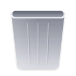

<!DOCTYPE html>
<html lang="en">
<head>
<meta charset="utf-8">
<title>Dock — exact</title>
<!--
  The rmac Dock at 1:1 logical points, measured from the owner's Mac
  (macOS 26, 2026-09-23, Retina captures ÷ 2: target/evidence/reference-mac/
  desktop-dark.png and desktop-light.png, the Dock menus in
  target/evidence/mac-2026-09-23/menus/f046–f052). Rust (shell/bins/rmac-dock)
  copies these numbers; the icons are the same files the shell loads.

  T = Dock tile size (the "Size" preference; the owner's is 64). The capture
  is at T = 64: the macOS icon grid puts an 824/1024 squircle in the tile,
  and 52 of 64 is exactly what the capture shows. Every other value is a
  ratio of T so it follows the Size slider.

  Measured (pt)                               ratio of T
    tile (icon canvas)            64           1
    visible icon squircle         52           0.8125     (Apple grid 0.805)
    icon squircle corner          13           0.203      (0.25 of the squircle)
    pitch / gap between tiles     68 / 4       1.0625 / 0.0625
    gap between visible icons     16           0.25
    shelf height                  84           1.3125
    shelf padding (tile → rim)    10           0.156      (16 from the visible icon)
    shelf corner radius           28.5         0.445      (≈ 0.34 of the height)
    shelf bottom margin           5            0.078      (shelf rim → screen edge)
    separator                     1 × 62       — × 0.97   (centred; 11 from rim)
    separator side space          13 + gap     0.203      (tile edge → line 17)
    running dot                   4 ⌀          0.0625     centre 4 below the tile,
                                                           6 above the shelf's bottom rim
    shelf width check: 16 tiles + 2 separators = 16·64 + 17·4 + 2·27 + 2·10
                       = 1166 — the capture measures 1166.
  Colours over the wallpaper (the compositor supplies the blur):
    dark shelf fill   rgb(40,40,40) at 7 %  (the shelf barely darkens/desaturates)
    light shelf fill  white at 16 %
    shelf rim         1 pt, white ≈ 16 % dark / ≈ 28 % light, no drop shadow
    separator         dark: +65 on every channel (plus-lighter), drawn as white 33 %;
                      light: −57, drawn as black 35 %
    running dot       dark: +125 (plus-lighter), drawn as white 62 %;
                      light: −39, drawn as black 47 %
                      (plus-lighter can't reach the wallpaper through the shelf's
                      backdrop group, in CSS or GPUI, so both use alpha)
                      every running app gets the same dot (no "active" variant)
  Dock menu (f046–f052):
    no title row; rows 24; panel padding 5 (4 + 1 pt rim); separator block 11
    with its 1 pt line inset 16 from both edges; text 13 pt at 16 from the edge,
    or 24.5 when the menu has a check column (✓ at 9); right padding 16.
    width = widest row + padding (no minimum: the Trash menu is 92 wide);
    radius ≈ 10–10.5; rim 1 pt white ≈ 27 % plus a black 0.5 pt outer hairline.
    Pointer: 20 wide × 10 tall, 45° sides, rounded tip, aimed at the tile
    centre, which sits 26.5 from the menu's left edge (all three captures).
    Body bottom 25.5 above the shelf top; tip 15.5 above it.
    The tile whose menu is open is darkened (black ≈ 53 %).
  Not measured (no capture yet): the hover tooltip. It keeps the current rmac
  pill (radius 8, 13 pt text, 6 above the shelf) until one is captured.
  Magnification is off by default; launch bounce is two ≈ 0.6 s hops.
  Keyboard focus (⌃F3, captured 2026-09-23 23:38, ⌃F3 → → → ↑ → Esc):
    there is NO focus ring. The focused tile is darkened exactly like the
    menu-open tile (black 52.5 % over the icon squircle: Finder 35,180,255 →
    17,85,121) and its name bubble is shown, as if hovered. ← / → move both.
    ↑ opens the tile's Dock menu with no row selected; the tile stays dark.
    Name bubble (keyboard focus shows the same bubble as hover):
      body 23 tall, fully rounded (radius 11.5), "Finder" 66.5 wide
      (13 pt text + ≈ 14 each side), centred on the tile;
      pointer ≈ 10 wide × 8.5 tall under the body's centre, its tip 6.5
      above the shelf's top rim (body bottom 15 above it);
      fill ≈ rgb(40,41,43) over the blur, 1 pt rim white ≈ 15 %.
-->
<style>
  :root {
    --T: 64px;
    --gap: calc(var(--T) * 0.0625);
    --pad: calc(var(--T) * 0.15625);
    --shelf-r: calc(var(--T) * 0.445);
    --bottom: calc(var(--T) * 0.078125);
    --art: calc(var(--T) * 0.8125 * 1024 / 824); /* rmac art: 824/1024 squircle */
    --sep-h: calc(var(--T) * 0.96875);
    --sep-m: calc(var(--T) * 0.203125);
    --dot: calc(var(--T) * 0.0625);
    --font: "Inter", -apple-system, "SF Pro Text", system-ui, sans-serif;
  }
  html, body { margin: 0; background: #0f1a6e; }
  body { width: 1470px; font: 400 13px/1 var(--font); -webkit-font-smoothing: antialiased; }
  .scene { position: relative; height: 420px; overflow: hidden;
    background:
      radial-gradient(60% 90% at 30% 10%, #5a6fc4 0%, transparent 60%),
      radial-gradient(50% 80% at 85% 20%, #7c8fd0 0%, transparent 60%),
      linear-gradient(180deg, #2a3aa0 0%, #1a2a8c 55%, #2c3a96 100%); }
  .scene + .scene { border-top: 1px solid #000; }
  .dock { position: absolute; left: 50%; bottom: var(--bottom); transform: translateX(-50%);
    display: flex; align-items: flex-end; gap: var(--gap); padding: var(--pad);
    border-radius: var(--shelf-r);
    background: rgba(40,40,40,.07);
    backdrop-filter: blur(20px);
    box-shadow: inset 0 0 0 1px rgba(255,255,255,.16); }
  .tile { position: relative; width: var(--T); height: var(--T);
    display: flex; align-items: center; justify-content: center; }
  .tile img { width: var(--art); height: var(--art); display: block; }
  .tile.menu-open::after { content: ""; position: absolute;
    width: calc(var(--T) * 0.8125); height: calc(var(--T) * 0.8125);
    border-radius: calc(var(--T) * 0.203); background: rgba(0,0,0,.53); }
  .tile.trash.menu-open img { filter: brightness(.47); }
  /* ⌃F3 keyboard focus: the menu-open darkening, no ring. */
  .tile.kb-focus::after { content: ""; position: absolute;
    width: calc(var(--T) * 0.8125); height: calc(var(--T) * 0.8125);
    border-radius: calc(var(--T) * 0.203); background: rgba(0,0,0,.525); }
  .bubble { position: absolute; transform: translateX(-50%); white-space: nowrap;
    height: 23px; box-sizing: border-box; padding: 0 14px; display: flex; align-items: center;
    border-radius: 11.5px; color: #f5f5f7; background: rgba(40,41,43,.92);
    backdrop-filter: blur(20px); box-shadow: inset 0 0 0 1px rgba(255,255,255,.15); }
  .bubble svg { position: absolute; left: 50%; top: 100%; margin-left: -6px; margin-top: -1px; overflow: visible; }
  .tile.running::before { content: ""; position: absolute; left: 50%;
    bottom: calc(-1 * (var(--dot) / 2 + var(--T) * 0.0625));
    width: var(--dot); height: var(--dot); margin-left: calc(var(--dot) / -2);
    border-radius: 50%; background: rgba(255,255,255,.62); }
  .sep { align-self: center; width: 1px; height: var(--sep-h); margin: 0 var(--sep-m);
    background: rgba(255,255,255,.33); }

  .tooltip { position: absolute; transform: translateX(-50%); white-space: nowrap;
    padding: 4px 12px; border-radius: 8px; color: #f5f5f7;
    background: rgba(44,44,46,.95); box-shadow: 0 0 0 1px rgba(255,255,255,.12), 0 6px 16px rgba(0,0,0,.3); }

  .menu { position: absolute; padding: 4px; border-radius: 10px; color: rgba(255,255,255,.9);
    background: rgba(44,44,50,.8); backdrop-filter: blur(24px);
    border: 1px solid rgba(255,255,255,.27);
    box-shadow: 0 0 0 .5px #000, 0 10px 30px rgba(0,0,0,.35); }
  .menu .row { height: 24px; display: flex; align-items: center; padding: 0 11px; border-radius: 6px; white-space: nowrap; }
  .menu.checks .row { padding-left: 4px; }
  .menu.checks .row .check { width: 15.5px; flex: none; }
  .menu .row.sel { background: #0a64d8; color: #fff; }
  .menu .row.off { color: rgba(255,255,255,.3); }
  .menu .sep-row { height: 11px; display: flex; align-items: center; padding: 0 11px; }
  .menu .sep-row i { flex: 1; height: 1px; background: rgba(255,255,255,.14); }
  .menu svg.pointer { position: absolute; top: 100%; margin-top: 0; overflow: visible; }
</style>
</head>
<body>
<!-- Scene 1: resting Dock with a hovered tooltip over Terminal -->
<div class="scene" id="s1"></div>
<!-- Scene 2: the Files tile's right-click menu -->
<div class="scene" id="s2"></div>
<!-- Scene 3: ⌃F3 keyboard focus on the first tile -->
<div class="scene" id="s3"></div>
<script>
const APPS = [
  ["Files", "../packaging/rmac-apps/icons/org.rmac.Files.svg", true],
  ["Apps", "../packaging/rmac-apps/icons/org.rmac.AppDrawer.svg", false],
  ["Terminal", "../packaging/rmac-apps/icons/org.rmac.Terminal.svg", true],
  ["Notes", "../packaging/rmac-apps/icons/org.rmac.Notes.svg", false],
  ["TextEdit", "../packaging/rmac-apps/icons/org.rmac.TextEditor.svg", false],
  ["Activity Monitor", "../packaging/rmac-apps/icons/org.rmac.SystemMonitor.svg", true],
  ["System Settings", "../packaging/rmac-apps/icons/org.rmac.SystemSettings.svg", false],
];
function dock(scene, open, focused) {
  const d = document.createElement("div"); d.className = "dock";
  APPS.forEach(([name, src, running], i) => {
    const t = document.createElement("div");
    t.className = "tile" + (running ? " running" : "") + (open === i ? " menu-open" : "") + (focused === i ? " kb-focus" : "");
    t.dataset.name = name; t.innerHTML = ``; d.appendChild(t);
  });
  d.insertAdjacentHTML("beforeend", `<div class="sep"></div>
    <div class="tile trash${open === "trash" ? " menu-open" : ""}" data-name="Trash">
    </div>`);
  scene.appendChild(d); return d;
}
const s1 = document.getElementById("s1"), s2 = document.getElementById("s2");
const d1 = dock(s1), d2 = dock(s2, 0);
function centerX(scene, tile) {
  const a = scene.getBoundingClientRect(), b = tile.getBoundingClientRect();
  return b.left - a.left + b.width / 2;
}
const T = 64, shelfTop = 0.078125 * T + 1.3125 * T; // 89 above the screen edge

// Tooltip (unmeasured: current rmac style).
const term = d1.children[2], tip = document.createElement("div");
tip.className = "tooltip"; tip.textContent = "Terminal";
tip.style.left = centerX(s1, term) + "px"; tip.style.bottom = (shelfTop + 6) + "px";
s1.appendChild(tip);

// Files menu: the Finder menu shape from f046.
const menu = document.createElement("div"); menu.className = "menu checks";
const rows = [
  ["", "Downloads"], ["✓", "Projects"], null,
  ["", "New Files Window"], ["", "Find…"], null,
  ["", "Go to Folder…"], ["", "Connect to Server…"], null,
  ["", "Options", "sel"], null,
  ["", "Show All Windows"], ["", "Hide"], ["", "Quit", "off"],
];
menu.innerHTML = rows.map(r => r === null ? `<div class="sep-row"><i></i></div>` :
  `<div class="row ${r[2] || ""}"><span class="check">${r[0]}</span>${r[1]}</div>`).join("") +
  // 20 × 10 pointer, 45° sides, rounded tip; fill + rim match the panel.
  `<svg class="pointer" width="22" height="12" viewBox="-1 -1 22 12" style="left:${26.5 - 11 - 1}px; margin-top:-1px">
     <path d="M0 0 L8.6 8.6 Q10 10 11.4 8.6 L20 0 Z" fill="rgba(44,44,50,.8)"/>
     <path d="M0 0 L8.6 8.6 Q10 10 11.4 8.6 L20 0" fill="none" stroke="rgba(255,255,255,.27)" stroke-width="1"/>
   </svg>`;
s2.appendChild(menu);
menu.style.left = (centerX(s2, d2.children[0]) - 26.5) + "px";
menu.style.bottom = (shelfTop + 25.5) + "px";

// ⌃F3: first tile focused — darkened, with its name bubble (measured).
const s3 = document.getElementById("s3"), d3 = dock(s3, undefined, 0);
const bubble = document.createElement("div"); bubble.className = "bubble";
bubble.innerHTML = `Files<svg width="12" height="10" viewBox="-1 -1 12 10">
  <path d="M0 0 L4.2 7.2 Q5 8.4 5.8 7.2 L10 0 Z" fill="rgba(40,41,43,.92)"/>
  <path d="M0 0 L4.2 7.2 Q5 8.4 5.8 7.2 L10 0" fill="none" stroke="rgba(255,255,255,.15)"/></svg>`;
bubble.style.left = centerX(s3, d3.children[0]) + "px";
bubble.style.bottom = (shelfTop + 15) + "px";
s3.appendChild(bubble);
</script>
</body>
</html>
